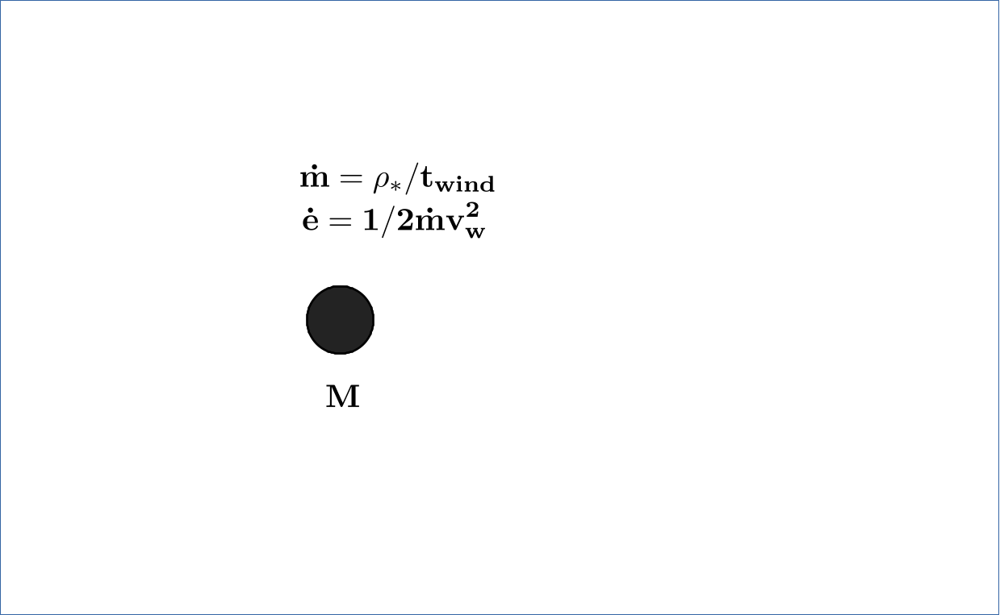
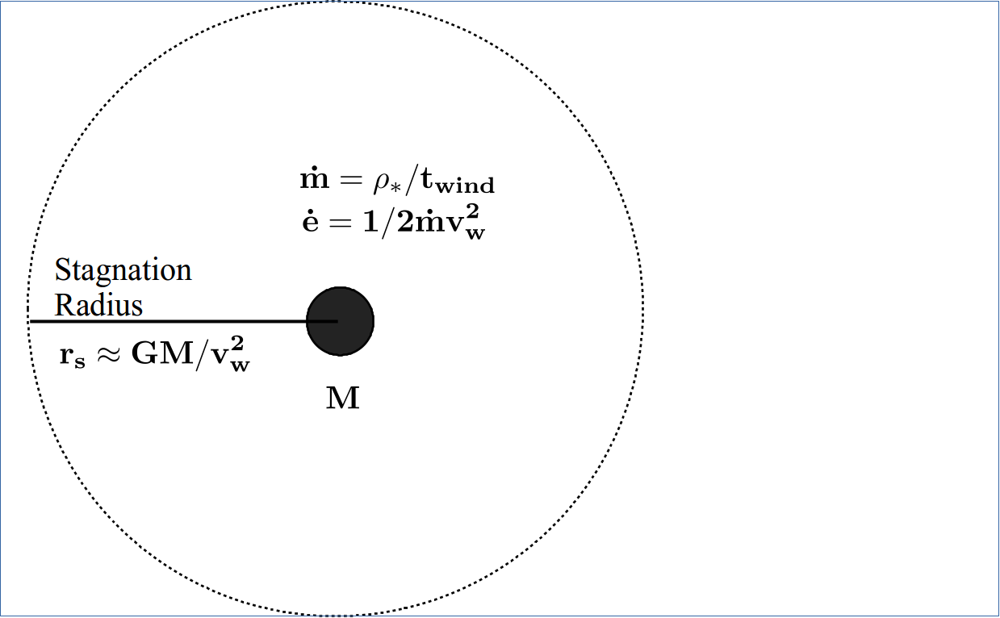
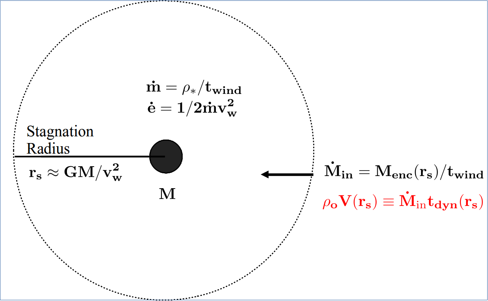
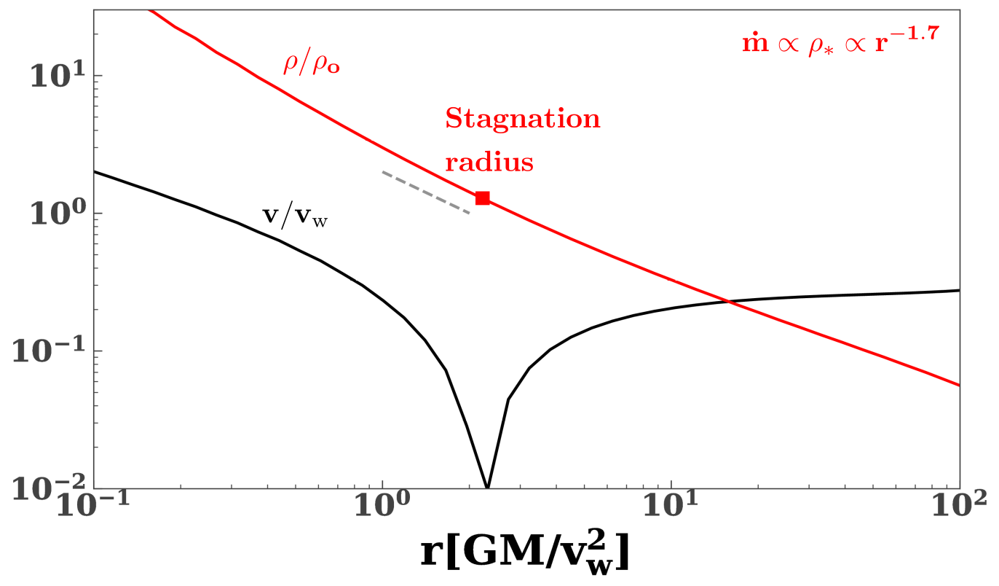
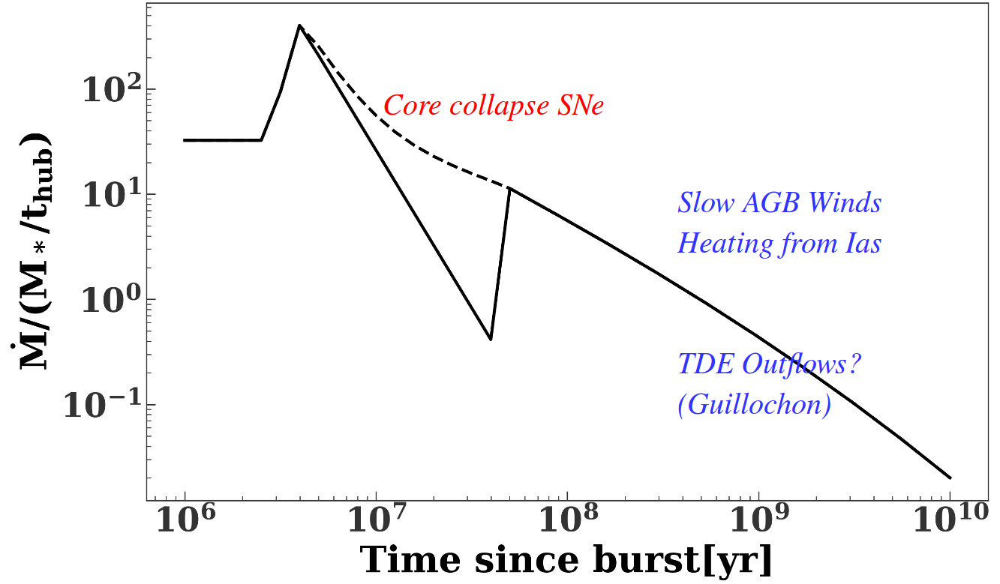
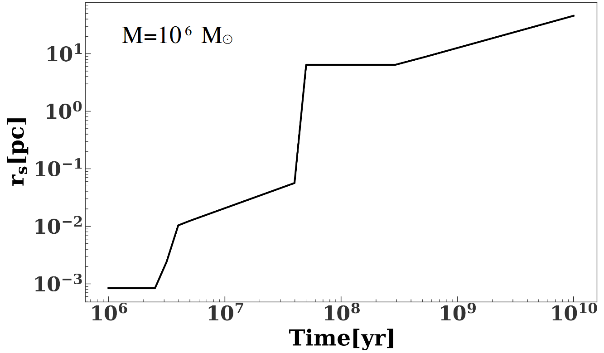
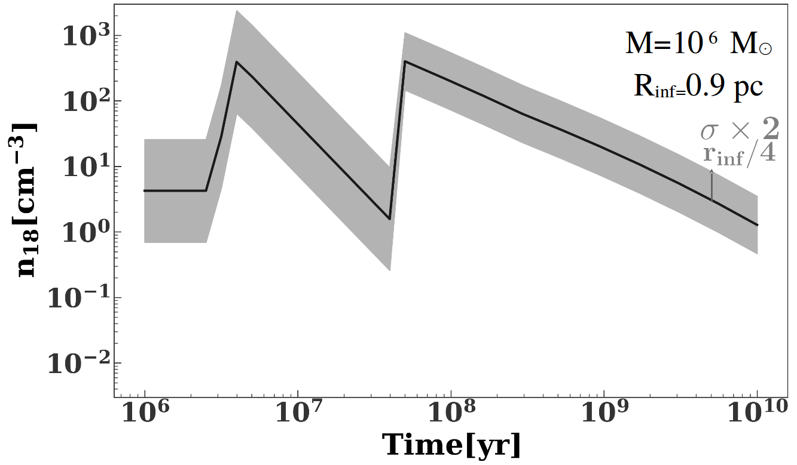
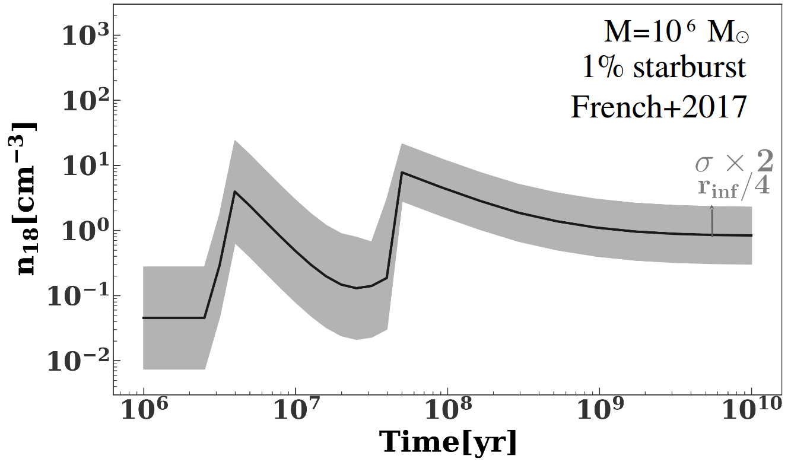
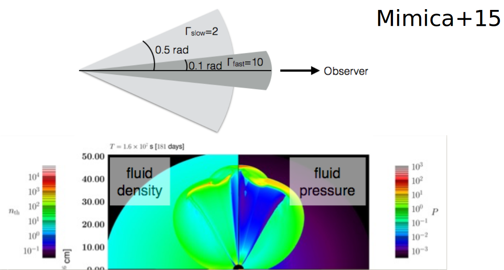

Introduction to TDEs

Swift-J1644

TDE radio observations

of Kate Alexander
The circumnuclear medium
The circumnuclear medium
The circumnuclear medium
Assumptions and method
- Spherical symmetry
- Steady-state
- Single population
Profiles
Mass return rate
Stagnation radius
Density
Density
Thermal stability
If heating = cooling, thermal instability!
Thermal stability
Assuming marginal thermal stability gives analytic estimate for the density:
$5 \left(\frac{\sigma}{100 \,{\rm km\,s^{-1}}}\right)^{4.4} \left(\frac{r}{10^{18}\ \, {\rm cm}}\right)^{-1}$ cm$^{-3}$
Jets
- Shocks
- Accelerate relativistic electrons
- Synchrotron radiation.
Jets
Simulation results
- Slow component dominates near peak at high densities/low frequencies ($n_{18}\geq 10$ cm$^{-3}$, $\nu \leq 5$ GHz)
- Viewing angle does not matter at late times.